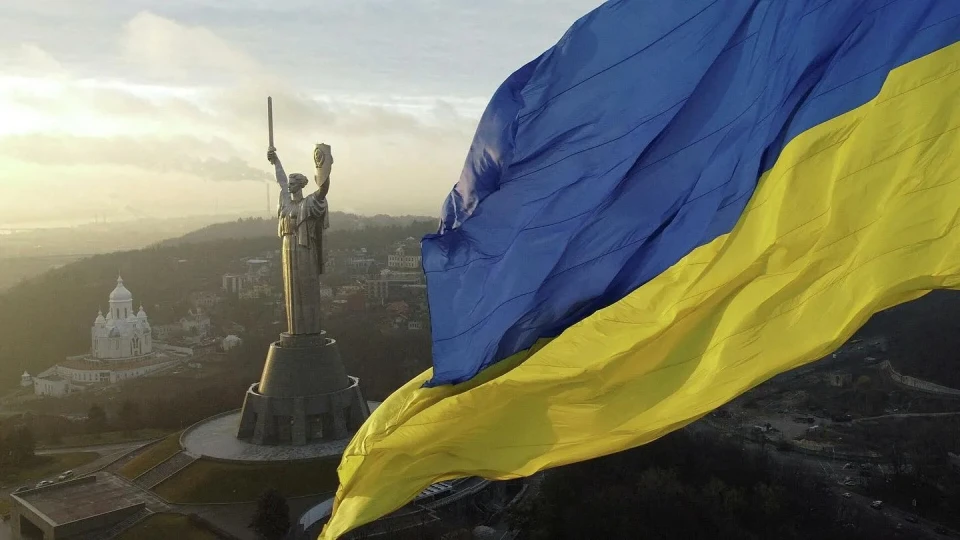

Україна
Україна — це велика і незалежна держава, яка розташована в Східній Європі. Вона має багату історію, унікальну культуру та сильний народ, який цінує свою свободу і традиції. Країна відома своїми мальовничими пейзажами, родючими землями та гостинністю людей. Незважаючи на складні історичні періоди, Україна зберегла свою ідентичність і продовжує розвиватися як сучасна європейська держава.
Сьогодні Україна привертає увагу всього світу не лише своєю історією, а й сучасними досягненнями в різних сферах, включаючи культуру, технології та освіту. Вона має великий потенціал для розвитку і відіграє важливу роль у міжнародному співтоваристві. Вивчення України допомагає краще зрозуміти її народ, цінності та прагнення до майбутнього.

Зміст
Географія України
Україна є однією з найбільших країн Європи за площею. Вона межує з багатьма країнами, такими як Польща, Словаччина, Угорщина, Румунія та інші. Її територія включає рівнини, гори, річки та ліси, що робить природний ландшафт дуже різноманітним. Найбільша річка країни — Дніпро, яка відіграє важливу роль у житті людей і економіці.
Основні географічні об'єкти України:
-
Гори:
- Карпати
- Кримські гори
-
Річки:
- Дніпро
- Південний Буг
- Сіверський Донець
-
Моря:
- Чорне море
- Азовське море
Культура та традиції
Українська культура формувалася протягом багатьох століть і поєднує в собі елементи різних історичних періодів. Вона включає народні пісні, танці, традиційний одяг та ремесла. Українці пишаються своєю культурною спадщиною і передають її з покоління в покоління.
Особливу роль відіграють свята, під час яких люди дотримуються давніх традицій, готують національні страви та проводять час з родиною. Такі звичаї допомагають зберігати національну ідентичність і об'єднують людей.
Популярні традиції:
-
Святкові:
- Різдво
- Маслениця
- Великдень
-
Народні:
- Вишиванки
- Народні танці
-
Кухня:
- Борщ
- Вареники
Природа України
Природа України дуже різноманітна і красива. В країні є ліси, степи, гори та узбережжя морів. Це створює ідеальні умови для розвитку туризму та відпочинку. Багато людей приїжджають, щоб насолодитися природою та побачити унікальні ландшафти.
Крім того, Україна має багато природних заповідників і національних парків, які охороняють рідкісні види рослин і тварин. Збереження природи є важливим завданням для майбутніх поколінь.
Цікаві факти
Україна має багато цікавих особливостей, які роблять її унікальною серед інших країн. Наприклад, вона є одним із найбільших виробників зерна у світі. Також тут знаходиться одна з найглибших станцій метро — Арсенальна в Києві.
Факти
- Найбільша країна в Європі за площею (без урахування Росії)
- Один із найбільших експортерів зерна
- Має багату історію та культуру
Висновок
Україна — це країна з великим потенціалом, багатою історією та красивою природою. Вона продовжує розвиватися і зміцнювати свої позиції у світі. Вивчення України допомагає краще зрозуміти її народ і культуру, а також оцінити її значення на міжнародній арені.
Завдяки своїм ресурсам, традиціям і прагненню до розвитку Україна має всі можливості для успішного майбутнього. Це країна, яка заслуговує на увагу та повагу.